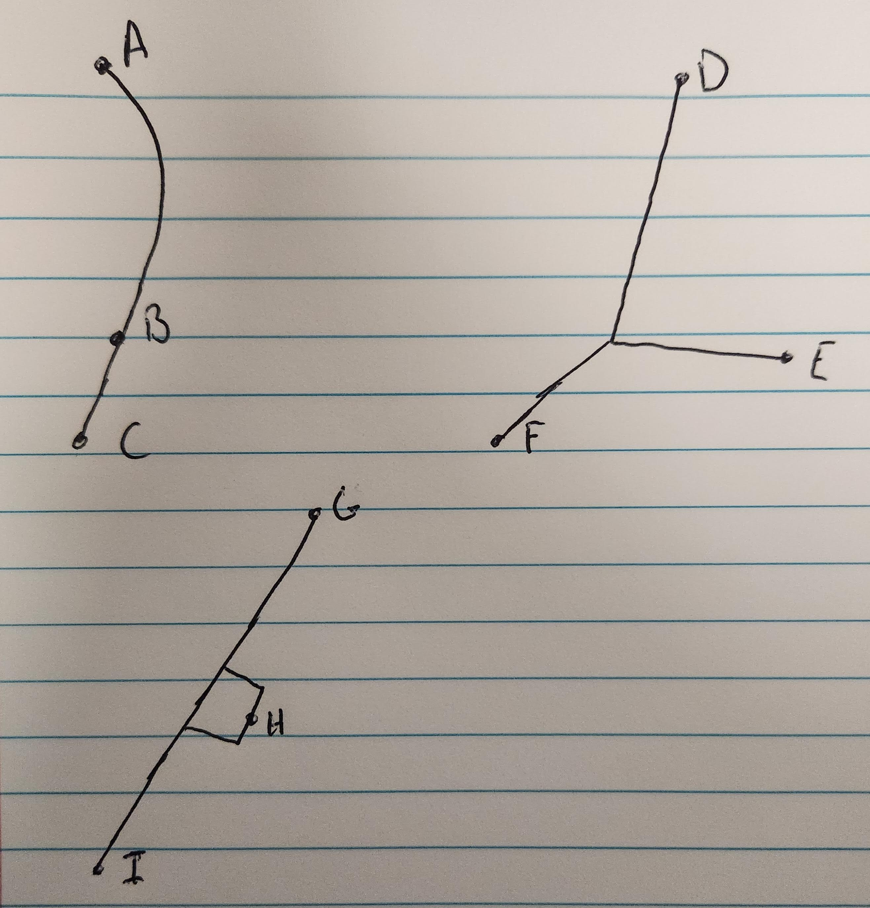

How is a route measured when the Eliot Deviation Index of the route is calculated? For anyone looking to contribute to the database by measuring and calculating other routes, there are a number of standards that are followed to ensure consistency and accuracy of every Eliot Deviation Index calculation.
Eligibility
In order for a route to be added to the database, it needs to be eligible for an Eliot Deviation Index.
The six eligibility criteria are listed on the home page of this website and are repeated below.
1. The line must begin and end at different stops. No loops allowed.
2. The line must have at least three stops.
3. The line must not end along the return journey to the beginning.
- 3a. Lines that end with turning loops end at the midpoint of the loop.
- 3b. Lines must travel between two distinct terminals
4. The line must look like a transit line and actually make sense.
5. The line must be a currently operating service pattern at the time of calculation.
6. The line must travel primarily by land.
There is also a seventh rule when it comes to crowdsourced data - the agency that operates the route must already have its stops listed in the stop database. If your desired agency isn't listed, let me know. I'll work on adding it at some point.
Line Definition
How do you define the line? Where do you start and end? This is best explained with some diagrams.

(Please excuse the fact that I ripped out a page of a notebook to draw these. All points represent terminals.)
Upper Left: Standard bus route, measure from one terminal to the other - A to B or A to C, depending on service patterns.
B could be a short-turn point, C could be a part-time extension. Each currently operated official short-turn is eligible under rule 5.
Upper Right: These routes must be split into multiple routes. One going between D and E, and one between D and F.
(If trips operate D to F via E, follow the above or below procedure.)
Bottom Left: Add each variant separately if some trips skip H and others don't.
For routes that end with a looping portion (but the whole route is not a loop), the route in the calculator should end at the halfway point of the loop. This is to ensure consistency when measuring in opposite directions.
The Pittsburgh Adjustment
Ever wonder why the Eliot Deviation Index measures distances between each stop rather than road or rail distance?
That is because of the Pittsburgh Adjustment to
the measurement. Long story short (read the entire blog post for more info), regional geography can influence the road or rail distance
along the entire line, so the Pittsburgh Adjustment is needed to equalize it against other regions.
Calculator Instructions
In the summer of 2023, the Eliot Deviation Index calculator received a major overhaul, simplifying the process for index values to be
calculated for the growing database. Simply select the desired agency from the drop down, and enter the stop IDs in order (from the stop listing)
and click the "Export" button when completed. Copy that list and post it in our Discord server for verification.
Stops can be removed from the line as well with a click of a button.
Crowdsourcing
Yes, the database does accept crowdsourced data in the form of both stops and calculated measurements!
For routes being entered into the database - All the line definitions described above must be followed, and will be verified before being merged into the larger database.
For stop listings being entered into the database - Stops must have a stop ID (of reasonable length, remember, these are being typed out individually), along with a name and latitude and longitude coordiates (typically out to six decimals). Other coordinate systems are not supported.
Transit agencies or others looking to work with the data - Please reach out! The more, the merrier!